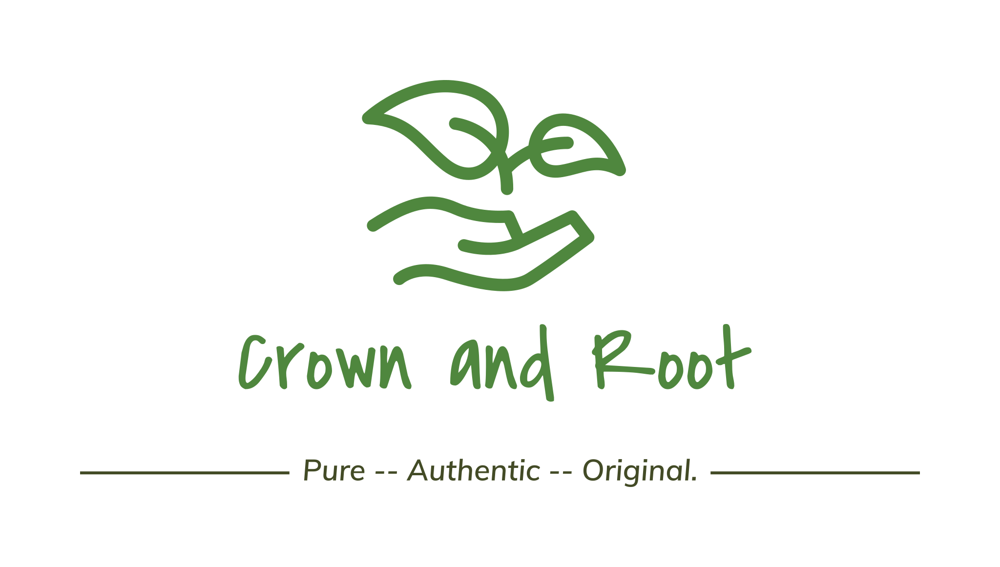

For beards
Softens coarse hair and conditions the skin underneath.

One rich oil to soften coarse beards, moisturize dry scalps, and add a healthy-looking sheen.
Use the slider to play the film.
1% of Profit Goes to Climate Action
Softens coarse hair and conditions the skin underneath.
Moisturizes dry-feeling skin and adds a natural sheen.
Conditions the hair you have so it looks and feels softer.
Batana oil comes from the nut of the American oil palm, Elaeis oleifera. It has a rich texture and is used to condition hair and moisturize skin.
This is a cosmetic oil for conditioning hair and moisturizing skin. It isn't a hair loss treatment. If you're concerned about hair loss, speak with a doctor or dermatologist.
Warm a small amount between your fingertips until it softens, then massage it into your beard or scalp. Patch test before your first use.
We're preparing for launch. Email info@crownsandroot.com and we'll let you know when orders open.